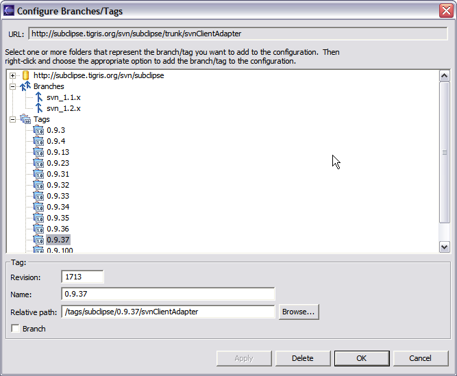
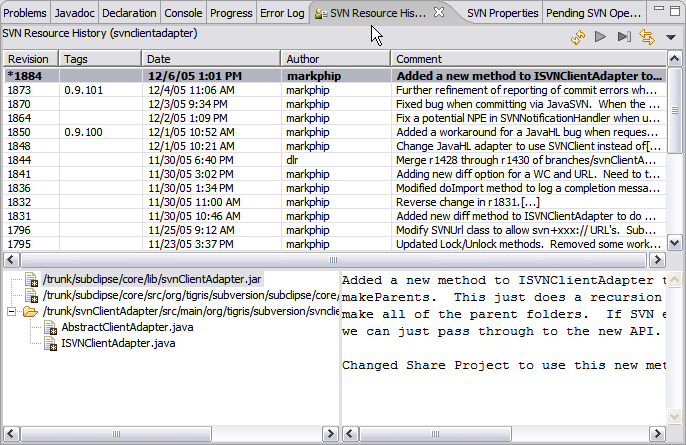

In many ways, the support for branching and tagging in SVN represents a vast improvement over CVS. It certainly addresses many of the complaints with this feature in CVS. There is one significant drawback in the implementation in SVN. Namely, the process of creating a branch/tag does not leave behind any "breadcrumbs" in the source of the branch/tag operation to indicate that the branch/tag was created. In other words, there is information in the branch/tag that indicates where it came from, but there is no similar information in the origin of the branch/tag that would let you see or know that the branch tag exists. The net result is that when looking at a file or folder there is no easy way to know which revisions belong to which tags.
The SVN Eclipse plug-in aims to solve the above problem by allowing you to maintain a versioned property in your project that indicates the branches/tags that have been created from that project. The name of the property is subclipse:tags. The format is:
revision_number,tag_name,relative_path,branch/tag

The above screenshot shows what the property looks like. However there is a Configure Branches/Tags option on the Team menu that allows you to edit the property using a custom editor.
Besides providing basic editing capabilities, the dialog also includes a built-in repository browser. This allows you to select one or more folders and add them as a branch/tag in one action. When folders are added in this manner, the dialog automatically fills in the Revision number based on the Last Changed Revision of the selected folder.
Once the property has been defined, there are a number of ways that the plug-in takes advantage of it.
The History View contains a column to show the tags for a revision.

A preference controls whether to show this information when browsing history directly from the repository. To show the information we have to search the repository for the presence of the subclipse:tags property. On a slow connection you probably would not want to do this.
The Compare with Revision ... option also contains a column to show tags in its history view. This makes it easy to know which revisions you want to compare.

The URL Chooser that allows you to pick a URL in many of the SVN dialogs also shows the Branch/Tag information. This allows you to just select a branch/tag and the proper URL to that branch/tag will be automaticlly created.

In addition to the Configures Branches and Tags option, there is also support for automatically updating the subclipse:tags property when you create a Branch/Tag from within Eclipse. When you take this option, if we the subclipse:tags property exists on the item you selected, then a pop-up dialog will appear that allows you to confirm that you want to add this new information to the subclipse:tags property. You then just have to commit that property change after creating the Branch/Tag. This feature does not exist when creating the Branch/Tag from the repository browser as it is only possible to modify a versioned property in a working copy.
Related Tasks
Related Reference